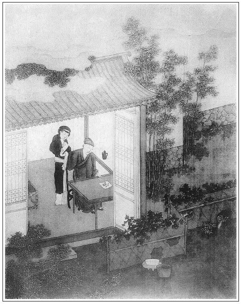

張回此回是「財」字一篇小結束。蓋梵僧藥以後，乃極力寫色的厲害。此又寫財的厲害，為「酒肉朋友、柴米夫妻」八字同聲一哭也。
西門捐金，人言彼不得朋友之報。不知其盜子虛之物為捐金之費，比盜賊得乎人財物而施人者，更加一等罪惡。蓋我既盜朋友之財，何責朋友之負我哉！
二目已做完，又接敘水秀才一段。蓋水乃冷物。今欲寫西門氏冷落於七十九回後，而不露冷信於前數十回之前，不特無以勸懲，亦何以為之文字哉：然即寫一水秀才來，則正炎熱時，何以入此冷姓？而水秀才一來，文字亦必冷盡矣。故先提明水秀才，乃閒閒說出，又輕輕抹去，重複寫一「溫」字出來。言此時冷雖末冷，熱已不熱，惟此屍居餘氣，以旦夕待死耳。故隔花一戲，借韓金訓透出「寒」字，又借春鴻留，春燕死，透出春去秋深。此又以水、溫二秀才，言不熱之，漸將冷之，幾層層文字，固自做開卷「冷、熱」二字。非真個有西門氏請代筆先生也。至後溫秀才去，而聶兩湖代寫軸文，已隱一冷水於內。故帶水戰，冷已極矣。而西門死，伯爵祭文，方用不秀才。水字為冷，豈不蓋信。
詩曰：
清河豪士天下奇，意氣相投山可移。
濟人不惜千金諾，狂飲寧辭百夜期。
雕盤綺食會眾客，吳歌趙舞香風吹。
堂中亦有三千士，他日酬恩知是誰？張夾哭盡天下萬世。

話說西門慶留下兩個歌童，隨即打發苗家人回書禮物，又賞了些銀錢。苗實領書，磕頭謝了出門。後來不多些時，春燕死了，止春鴻一人，張夾送去以往，迎不得將來矣。正是：
千金散儘教歌舞，留與他人樂少年。
卻說常峙節自那日求了西門慶的事情，還不得到手，房主又日夜催逼。恰遇西門慶從東京回家，今日也接風，明日也接風，一連過了十來日，只不得個會面。常言道：見面情難盡。一個不見，卻告訴誰？每日央了應伯爵，只走到大官人門首問聲，說不在，就空回了。繡旁一求人，便有此苦。回家又被渾家埋怨道：「你也是男子漢大丈夫，房子沒間住，吃這般懊惱氣。你平日只認的西門大官人，今日求些周濟，也做了瓶落水。」說的常峙節有口無言，呆瞪瞪不敢做聲。繡眉貧賤與富貴交，往往有虛名無實惠，數口掃盡。到了明日，早起身尋了應伯爵，來到一個酒店內，便請伯爵吃三杯。繡旁亦所不免。伯爵道：「這卻不當生受。」常峙節拉了坐下，量酒打上酒來，擺下一盤燻肉、一盤鮮魚。酒過兩巡，張夾十兄弟如此，所為酒肉弟兄也。常峙節道：「小弟向求哥和西門大官人說的事情，這幾日通不能會面，房子又催逼的緊，昨晚被房下聒絮了一夜，耐不的。五更抽身，專求哥趁著大官人還沒出門時，慢慢的候他。繡旁苦語。不知哥意下如何？」應伯爵道：「受人之托，必當終人之事。我今日好歹要大官人助你些就是了。」兩個又吃過幾杯，應伯爵便推早酒不吃了。常峙節又勸一杯，算還酒錢，一同出門，逕奔西門慶家裡來。
那時，正是新秋時候，金風薦爽。西門慶連醉了幾日，覺精神減了幾分。正遇周內相請酒，便推事故不去，自在花園藏春塢，和吳月娘、孟玉樓、潘金蓮、李瓶兒五個尋花問柳頑耍，好不快活。繡眉窮鬼已自可憐，而複寫一段富貴飽暖受用，與之相形，惡甚。張夾勝筵難再。常峙節和應伯爵來到廳上，問知大官人在屋裡，滿心歡喜。坐著等了好半日，卻不見出來。只見門外書僮和畫童兩個抬著一隻箱子，都是綾絹衣服，張旁襯常二妻子。氣吁吁走進門來，亂嚷道：「等了這半日，還只得一半。」就廳上歇下。應伯爵便問：「你爹在那裡？」書僮道：「爹在園裡頑耍哩。」伯爵道：「勞你說聲。」兩個依舊抬著進去了。不一時，書僮出來道：「爹請應二爹、常二叔少待，便來也。」兩人又等了一回，西門慶才走出來。二人作了揖，便請坐的。
伯爵道：「連日哥吃酒忙，不得些空，今日卻怎的在家裡？」西門慶道：「自從那日別後，整日被人家請去飲酒，醉的了不的，通沒些精神。今日又有人請酒，我只推有事不去。」伯爵道：「方纔那一箱衣服，是那裡抬來的？」西門慶道：「目下交了秋，大家都要添些秋衣。方才一箱，是你大嫂子的。還做不完，才勾一半哩。」常峙節伸著舌道：「六房嫂子，就六箱了，好不費事！小戶人家，一疋布也難得。張夾心事。哥果是財主哩。」繡眉孟子曰：「勿視其巍巍然」，正欲開豁此等眼孔。西門慶和應伯爵都笑起來。伯爵道：「這兩日，杭州貨船怎的還不見到？不知買賣貨物何如。這幾日，不知李三、黃四的銀子，曾在府裡頭開了些送來與哥麼？」西門慶道：「貨船不知在那裡擔擱著，書也沒捎封寄來，好生放不下。李三、黃四的，又說在出月才關。」應伯爵挨到身邊坐下，乘閒便說：繡眉開口告人之難如此。「常二哥那一日在哥席上求的事情，一向哥又沒的空，不曾說的。常二哥被房主催逼慌了，每日被嫂子埋怨，二哥只麻作一團，沒個理會。如今又是秋涼了，身上皮襖兒又當在典鋪裡。哥若有好心，常言道：救人須救急時無，省的他嫂子日夜在屋裡絮絮叨叨。況且尋的房子住著，也是哥的體面。因此，常二哥央小弟特地來求哥，早些周濟他罷。」西門慶道：「我曾許下他來，因為東京去，費的銀子多了，本待等韓夥計到家，和他理會。如今又恁的要緊？」伯爵道：「不是常二哥要緊，當不的他嫂子聒絮，只得求哥早些便好。」西門慶躊躇了半晌道：「既這等，也不難。且問你，要多少房子才夠住？」伯爵道：「他兩口兒，也得一間門面、一間客坐、一間床房、一間廚灶──四間房子，是少不得的。論著價銀，也得三四個多銀子。哥只早晚湊些，教他成就了這樁事罷。」西門慶道：「今日先把幾兩碎銀與他拿去，買件衣服，辦些家活，盤攪過來，待尋下房子，我自兌銀與你成交，可好麼？」兩個一齊謝道：「難得哥好心。」西門慶便叫書僮：「去對你大娘說，皮匣內一包碎銀取了出來。」書僮應諾。不一時，取了一包銀子出來，遞與西門慶。西門慶對常峙節道：「這一包碎銀子，是那日東京太師府賞封剩下的十二兩，你拿去好雜用。」打開與常峙節看，都是三五錢一塊的零碎紋銀。常峙節接過放在衣袖裡，就作揖謝了。西門慶道：「我這幾日不是要遲你的，你又沒曾尋的。只等你尋下，待我有銀，一起兌去便了。」常峙節又稱謝不迭。繡眉此一番稱頌不可少。三個依舊坐下，伯爵便道：「多少古人輕財好施，到後來子孫高大門閭，把祖宗基業一發增的多了。張夾也須問其如何來者，苗青之物可濟人乎？慳吝的，積下許多金寶，後來子孫不好，連祖宗墳土也不保。可知天道好還哩！」西門慶道：「兀那東西，是好動不喜靜的，怎肯埋沒在一處！也是天生應人用的，一個人堆積，就有一個人缺少了。因此積下財寶，極有罪的。」繡眉不以施予為功，而反以積財為罪，雖不可為敗子借口，然自是千古名言至理。西門慶始終用財，不出此意。張夾為財字一哭。
正說著，只見書僮托出飯來。三人吃畢，常峙節作謝起身，袖著銀子歡喜走到家來。剛剛進門，只見渾家鬧吵吵嚷將出來，罵道：「『梧桐葉落──滿身光棍』的行貨子！出去一日，把老婆餓在家裡，尚兀自千歡萬喜到家來，可不害羞哩！房子沒的住，受別人許多酸嘔氣，只教老婆耳朵裡受用。」那常二隻是不開口，繡眉袖中有物，便覺舉止安祥。任老婆罵的完了，輕輕把袖裡銀子摸將出來，放在桌兒上，打開瞧著道：「孔方兄，孔方兄！我瞧你光閃閃、響噹噹無價之寶，滿身通麻了，恨沒口水咽你下去。你早些來時，不受這淫婦幾場氣了。」繡旁數語又是一錢神小贊。張夾又為財字一哭。那婦人明明看見包裡十二三兩銀子一堆，喜的搶近前來，就想要在老公手裡奪去。繡旁急情饞眼，摹寫殆盡。常二道：「你生世要罵漢子，見了銀子，就來親近哩。我明日把銀子買些衣服穿，自去別處過活，再不和你鬼混了。」那婦人陪著笑臉道：張夾為銀子。「我的哥！端的此是那裡來的這些銀子？」常二也不做聲。婦人又問道：「我的哥，難道你便怨了我？我也只是要你成家。張夾為銀子。今番有了銀子，和你商量停當，買房子安身卻不好？倒恁地喬張致！我做老婆的，不曾有失花兒，憑你怨我，也是枉了。」常二也不開口。那婦人只顧饒舌，又見常二不揪不採，自家也有幾分慚愧，禁不得掉下淚來。張夾為銀子。常二看了，歎口氣道：「婦人家，不耕不織，把老公恁地發作！」那婦人一發掉下淚來。繡眉止此一物，其未得也，婦人怨之罵之而啞口不能對；其既得也，則冷譏熱訕，使之陪笑，陪笑不已，使之下淚。寫貧家一種有柴米而無恩愛夫妻情景，真令人欲哭。兩個人都閉著口，張旁化工。又沒個人勸解，悶悶的坐著。繡旁聲臭俱無處，偏能摹寫。常二尋思道：「婦人家也是難做。受了辛苦，埋怨人，也怪他不的。我今日有了銀子不採他，人就道我薄情。繡眉轉念方想到情義，更可悲。便大官人知道，也須斷我不是。」張夾可憐。就對那婦人笑道：「我自耍你，誰怪你來！只你時常聒噪，我只得忍著出門去了，卻誰怨你來？我明白和你說：這銀子，原是早上耐你不的，特地請了應二哥在酒店裡吃了三杯，張夾非此亦不能，可歎。一同往大官人宅裡等候。恰好大官人正在家，沒曾去吃酒，虧了應二哥許多婉轉，才得這些銀子到手。還許我尋下房子，兌銀與我成交哩！這十二兩，是先教我盤攪過日子的。」那婦人道：「原來正是大官人與你的，如今不要花費開了，尋件衣服過冬，省的耐冷。」常二道：「我正要和你商量，十二兩紋銀，買幾件衣服，辦幾件家活在家裡。等有了新房子，搬進去也好看些。只是感不盡大官人恁好情，繡眉西門慶施予借貸多矣，背地感恩止博此一語。後日搬了房子，也索請他坐坐是。」婦人道：「且到那時再作理會。」正是：
惟有感恩並積恨，萬年千載不生塵。
常二與婦人說了一回，婦人道：「你吃飯來沒有？」常二道：「也是大官人屋裡吃來的。你沒曾吃飯，就拿銀子買了米來。」婦人道：「仔細拴著銀子，我等你就來。」繡眉寫窮則一團寒酸之氣逼人。張夾可憐。常二取栲栳望街上買了米，栲栳上又放著一大塊羊肉，拿進門來。婦人迎門接住道：張眉「迎門接住」，與前「進門」「嚷將出來」，怒顏喜色躍然紙上，妙筆。「這塊羊肉，又買他做甚？」常二笑道：「剛才說了許多辛苦，不爭這一些羊肉，就牛也該宰幾個請你。」婦人笑指著常二罵道：「狠心的賊！今日便懷恨在心，看你怎的奈何了我！」常二道：「只怕有一日，叫我一萬聲：『親哥，饒我小淫婦罷！』我也只不饒你哩。試試手段看！」繡眉才數語，便近於戲，富貴易淫可想。張夾財，便淫。那婦人聽說，笑的往井邊打水去了。當下婦人做了飯，切了一碗羊肉，擺在桌兒上，便叫：「哥，吃飯。」常二道：「我才吃的飯，不要吃了。你餓的慌，自吃些罷。」那婦人便一個自吃了。收了家活，打發常二去買衣服。常二袖著銀子，一直奔到大街上來。看了幾家，都不中意。只買了一件青杭絹女襖、一條綠綢裙子、一件月白雲綢衫兒、一件紅綾襖子、一件白綢裙兒，共五件。自家也對身買了一件鵝黃綾襖子、一件丁香色綢直身，又買幾件布草衣服。共用去六兩五錢銀子。打做一包，背到家中，叫婦人打開看看。婦人看了，便問：「多少銀子買的？」常二道：「六兩五錢銀子。」婦人道：「雖沒便宜，卻值這些銀子。」一面收拾箱籠放好，明日去買家活。當日婦人歡天喜地過了一日，張旁果有此景。埋怨的話都掉在東洋大海裡去了，張夾一篇柴米夫妻文字。不在話下。
再表應伯爵和西門慶兩個，自打發常峙節出門，依舊在廳上坐的。西門慶因說起：「我雖是個武職，恁的一個門面，京城內外也交結許多官員，近日又拜在太師門下，那些通問的書柬，流水也似往來，我又不得細工夫料理。我一心要尋個先生在屋裡，教他替寫寫，省些力氣也好，只沒個有才學的人。你看有時，便對我說。」伯爵道：「哥，你若要別樣卻有，要這個倒難。第一要才學，第二就要人品了。又要好相處，沒些說是說非，翻唇弄舌，這就好了。張夾伏後。若是平平才學，又做慣搗鬼的，怎用的他！小弟只有一個朋友，他現是本州秀才，應舉過幾次，只不得中。他胸中才學，果然班馬之上，就是人品，也孔孟之流。他和小弟，通家兄弟，極有情分。曾記他十年前，應舉兩道策，那一科試官極口讚好。不想又有一個賽過他的，便不中了。後來連走了幾科，禁不的發白鬢斑。如今雖是飄零書劍，家裡也還有一百畝田、三四帶房子住著。」西門慶道：「他家幾口兒也夠用了，卻怎的肯來人家坐館？」應伯爵道：「當先有的田房，都被那些大戶人家買去了，如今只剩得雙手皮哩。」繡眉此後薦水秀才數段，皆以戲謔取笑而已。西門慶道：「原來是賣過的田，算什麼數！」伯爵道：「這果是算不的數了。只他一個渾家，年紀只好二十左右，生的十分美貌，又有兩個孩子，才三四歲。」西門慶道：「他家有了美貌渾家，那肯出來？」伯爵道：「喜的是兩年前，渾家專要偷漢，跟了個人，走上東京去了，兩個孩子又出痘死了，如今只存他一口，定然肯出來。」西門慶笑道：「恁他說的他好，都是鬼混。你且說他姓甚麼？」伯爵道：「姓水，張旁銀瓶落水，故必寫水。他才學果然無比，哥若用他時，管情書柬詩詞，一件件增上哥的光輝。人看了時，都道西門大官人恁地才學哩！」西門慶道：「你都是吊謊，我卻不信。你記的他些書柬兒，念來我聽，看好時，我就請他來家，撥間房子住下。只一口兒，也好看承的。」伯爵道：「曾記得他捎書來，要我替他尋個主兒。這一封書，略記的幾句，念與哥聽：
[黃鶯兒]書寄應哥前，別來思，不待言。滿門兒托賴都康健。捨字在邊，傍立著官，有時一定求方便。羨如椽，往來言疏，落筆起雲煙。」
西門慶聽畢，便大笑將起來，道：「他既要你替他尋個好主子，卻怎的不捎書來，到寫一隻曲兒來？又做的不好。可知道他才學荒疏，人品散蕩哩。」伯爵道：「這到不要作準他。只為他與我是三世之交，自小同上學堂。先生曾道：『應家學生子和水學生子一般的聰明伶俐，後來一定長進。』落後做文字，一樣同做，再沒些妒忌，極好兄弟。故此不拘形跡，繡眉人有欲譽妻妾美而難於發言者，乃譽姨之美與妻相似，此正師其意而反用之。便隨意寫個曲兒。況且那只曲兒，也倒做的有趣。」西門慶道：「別的罷了，只第五句是甚麼說話？」白爵道：「哥不知道，這正是拆白道字，尤人所難。『捨』字在邊，旁立著『官』字，不是個『館』字？──若有館時，千萬要舉薦。因此說：『有時定要求方便。』哥，你看他詞裡，有一個字兒是閒話麼？只這幾句，穩穩把心窩裡事都寫在紙上，可不好哩！」西門慶被伯爵說的他恁地好處，到沒的說了。張夾一對瞎子，妙絕。只得對伯爵道：「到不知他人品如何？」伯爵道：「他人品比才學又高。前年，他在一個李侍郎府裡坐館，那李家有幾十個丫頭，一個個都是美貌俊俏的。又有幾個伏侍的小廝，也一個個都標緻龍陽的。那水秀才連住了四五年，再不起一些邪念。後來不想被幾個壞事的丫頭小廝，見他似聖人一般，反去日夜刮他。那水秀才又極好慈悲的人，便口軟勾搭上了。繡眉今人實有類此而大言不慚者。因此，被主人逐出門來，哄動街坊，人人都說他無行。其實，水秀才原是坐懷不亂的。若哥請他來家，憑你許多丫頭、小廝，同眠同宿，你看水秀才亂麼？張夾伏畫童。再不亂的。」西門慶笑罵道：「你這狗才，單管說謊吊皮鬼混人。前月敝同僚夏龍溪請的先生倪桂巖，曾說他有個姓溫的秀才。張夾水秀才總是溫秀才之影也。且待他來時再處。」正是：
將軍不好武，稚子總能文。
文回文禹門云：富有兩種，有吝而致富者，有奢而益富者，其間有天意、人事之分焉。富而吝，大抵六親不認，五賊全除，而勤儉持家，簡樸自奉者不與焉，此人事也。富而奢，不過納賄求榮，出資討好，而樂善喜施，急公好義者不與焉，此天意也。然往往得於天者，天亦能奪之，剝於人者，人亦能耗之。其悖入悖出，旋聚旋散，同歸於空，則一也。
彼西門慶者，得之易，失之亦易，儼如賭博贏來之錢，不甚愛惜，登時施捨，此而謂之疏財，可乎？又如強盜劫來之貨，視同泥沙，頃刻分散，此而謂之仗義，然乎？無識者輒雲；西門慶亦有可取處，如修廟印經，憐貧助友，不猶賢於一文不捨者乎？嗚呼！若而人目光如豆，心塞以茅，尚可與言世事哉！一柱香，祈百年壽考，保萬貫家財，神其許之乎？一頓飯，望殺身圖報，須性命是從，人其應之乎？常峙節之所得者，不及蔡太師、翟親家之一分一厘；西門慶之所施者，未損李大姐、苗家奴半而又半。若曰此西門慶好處，無怪以兇惡大憝為及時雨而奴頑婢膝以趨奉之也。
至於常峙節夫婦之詬誶於無錢時，歡欣於見銀日；非虛語也，殆實情也。作者調侃世人不少矣。
按：此評寫於光緒五年（1879）五月十六日